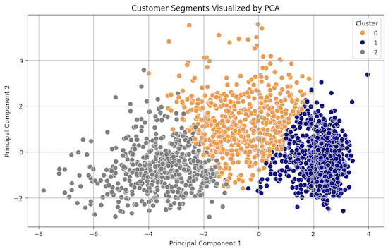
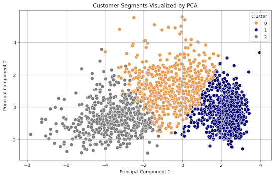

This project, developed as a final assignment for IST 418: Big Data Analytics at Syracuse University, focuses on unsupervised machine learning for retail marketing strategy. Using PySpark’s MLlib, I implemented K-Means clustering on a customer dataset to uncover behavioral patterns and build three recommendation systems for targeted outreach and inventory optimization.
Sourced from Kaggle
The dataset includes 2,240 customer records with 29 variables. The data was collected from a Portuguese retail campaign containing demographics, spending, deal acceptance, and loyalty history
| Model | Key Metric | Score |
|---|---|---|
| K-Means Clustering | Silhouette Score | 0.3136 |
| FP-Growth | Rule Confidence | 0.80 - 1.00 |
 
